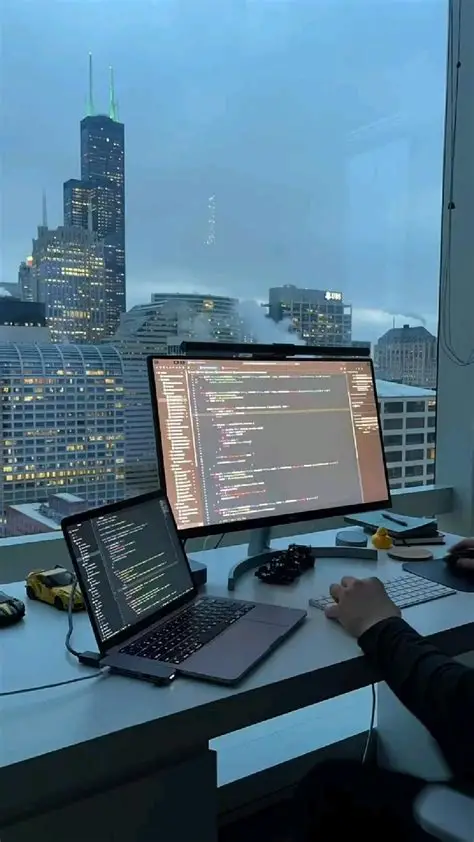
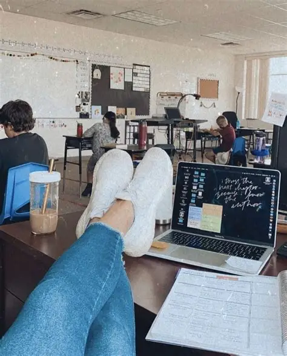

Featured Projects & Experience
Medical Diagnosis Assistant
Developed a Python-based symptom analysis tool providing structural diagnostic logic and treatment recommendations. Applied object-oriented programming principles to explore the intersection of healthcare and technology.

ComSci — Google Cloud X ElevenLabs Hackathon
Participated in an international hackathon to develop "ComSci," an AI-powered educational assistant built to simplify complex technical concepts for students.
AuraSync — Google Gemini 3.0 Hackathon
Developed an AI accessibility platform designed for visually and hearing-impaired individuals using Python and the Gemini API. Engineered contextual narration and environmental awareness modules for social impact.
Survey and Public Perception Analysis
Designed and executed a research survey exploring media's influence on public opinion. Collected quantitative responses and compiled a comprehensive data analysis report.
Healthcare AI Evaluation — Devpost
Earned an Honorable Mention award for testing a healthcare AI application.
Educational Outreach (MDCAT Support)
Created and distributed open-access digital study resources and custom academic materials for medical entry test candidates across student communities.
Design Lead (Voluntary Chapter)
Directed visual design initiatives for a local social-impact community, producing digital campaign media, brand assets, and structural impact reports.
Online English Language Instructor
Teaching English online to international students aged 7–10, structuring custom lesson plans focused on interactive speech, vocabulary acquisition, and reading fluency.
